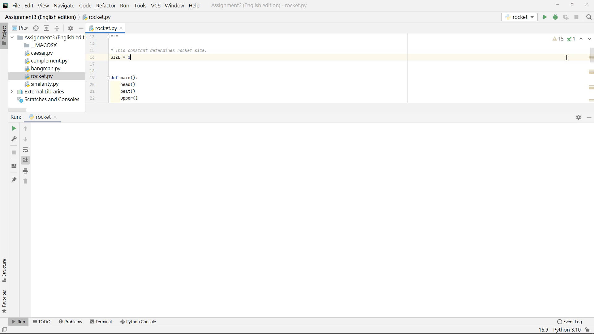
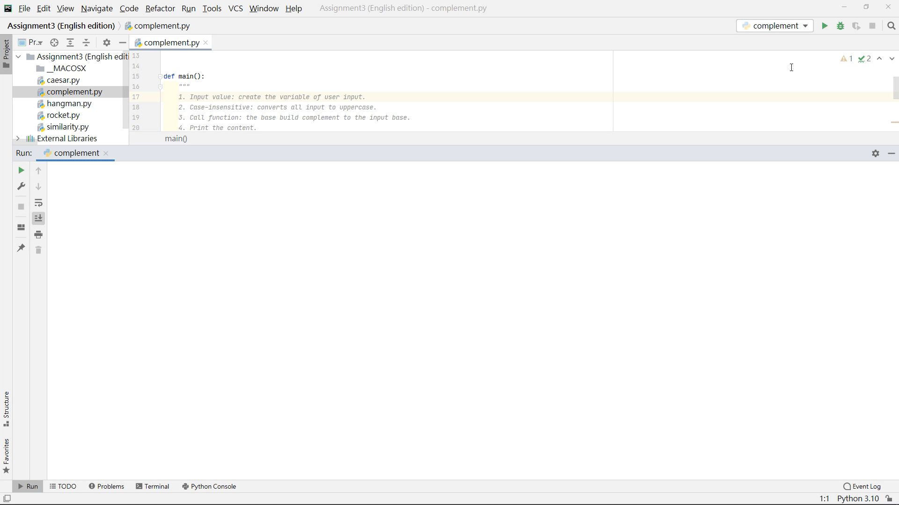
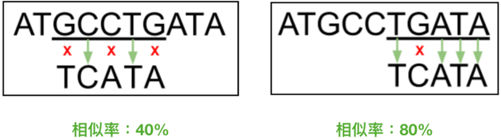
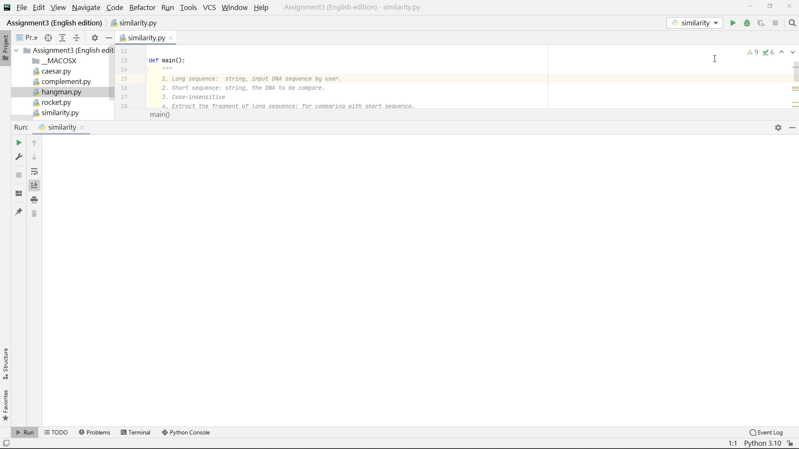
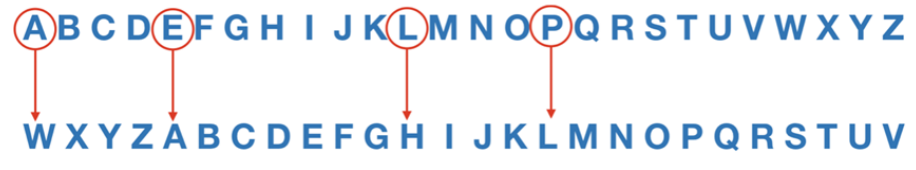
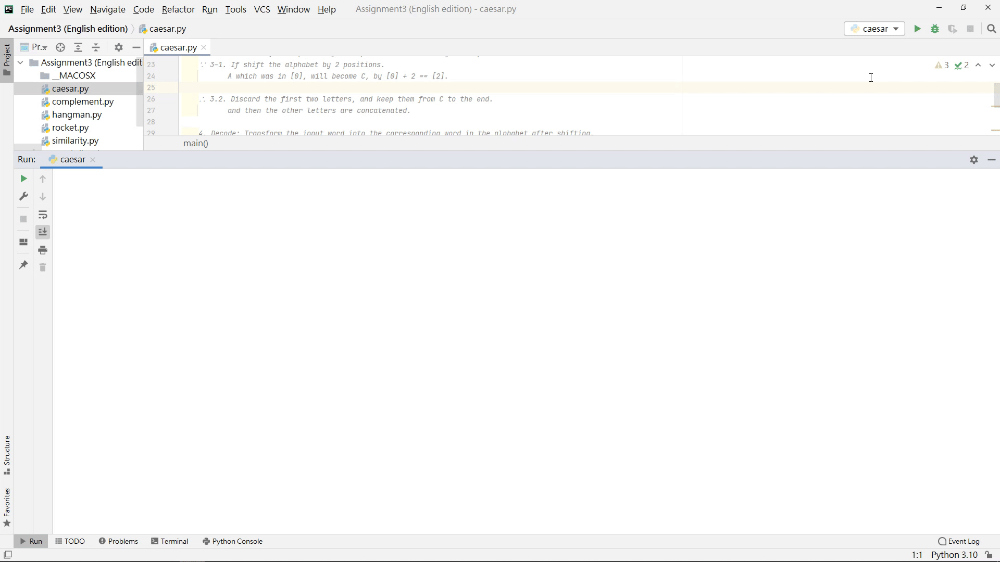
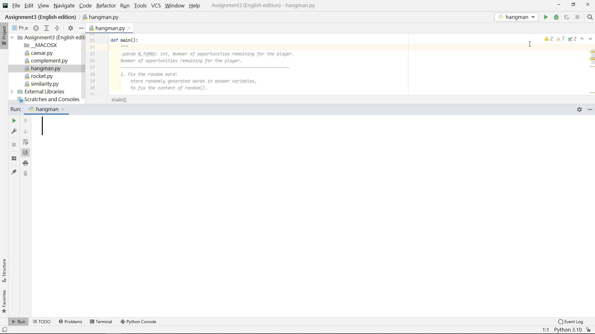
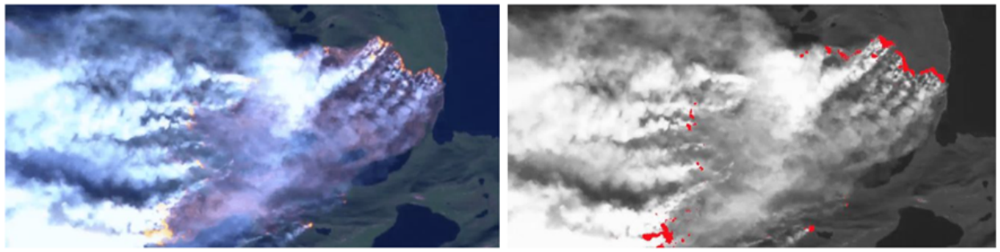
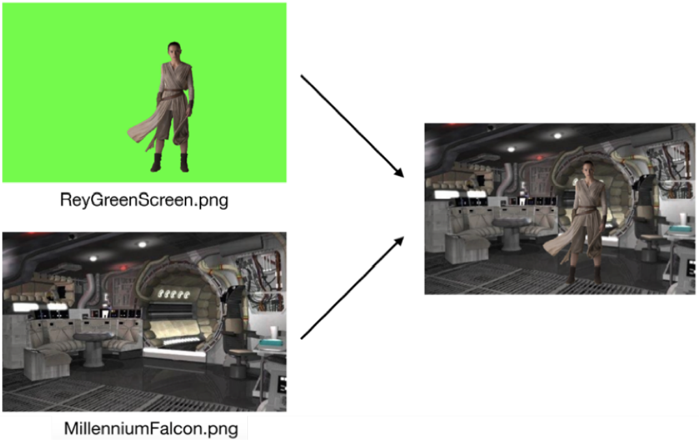

stanCode 基礎班課程作品
1. 文字處理
在文字處理中，學習應用變數、使用者輸入、運算子、函式、迴圈 (for loop and while loop) 及文字物件方法…等技巧。
1-1. 火箭
主要是訓練巢狀迴圈的概念，就像剛學迴圈時，都會學到九九乘法表一樣，不過有趣的是可以輸入不同的數值，得到不同大小的火箭。

1-2. 互補 DNA
主要訓練如何將 coding 應用在生物技術的 DNA 序列工程，在 DNA 是有四種含氮鹼基組成的，分別是 A、T、C、G，其中 A 與 T 為互補鹼基、C 與 G 為互補鹼基，因此當我們輸入了一個序列，應該回傳互補的序列，如下：
1 | ACGTTG # 輸入的序列 |
另外，假如使用者忘記轉成大寫也沒關係，這邊會自動轉換成大寫，再回傳互補基因。

1-3. DNA 相似度
找出 DNA 序列工程的相似度，是一個很常見的應用，利用比較短的 DNA 序列，從比較長的序列中，找到配對率最高的片段。

Figure. DNA 相似度
以上方的圖來說，可以看到左側的圖片，5 個鹼基裡面只有 3 個配對，相似率是 40%，右側的圖片，有 4 個配對成功，相似率為 80%，因此我們就會挑出 較長的基因序列 這個片段 - TGATA。
在示範中，先輸入一個較長的基因序列：ACTGACATTG，再輸入較短的基因序列：TGCCA，得到配對率最高的片段是 ACTGACATTG；另一個示範中，主要呈現不論使用者輸入大寫或小寫英文，同樣不影響基因配對。

1-4. 密碼學解密
了解密碼學的基礎原理，如何加密與解密。以密碼學的入門 - 凱薩密碼為例，是透過平移單字來達到加密效果，舉例來說，如果原本的字母表第一個單字是 A，而透過平移 4 格後，A 從第一位置移動到第 5 格 (原本 E 的位置)，而 L 原本在第 12 格，移動後到了 16 格的位置。

Figure. 上排為原本順序的字母表；下排為加密後的字母表。
題目中主要以解密為主，在這裡以 WLLHA 單字為例，在平移 4 格解密後得到是 apple，另一格則是透過平移 7 格解密句子 (rhn TKx MAX UXLm!)，得知原來解密後的訊息是：You are the best!

1-5. 猜單字
- 首先，在遊戲開始的時候，會以底線顯示單字的長度，如果有猜到裡面的單字就會顯示該單字的位置。
- 而在裡面的設定有個貼心設定，如果玩家誤觸到兩個單字或按到數字，只要不是輸入「一個英文單字」，就視為玩家輸入誤觸，所以不扣剩餘次數。
- 如果剩餘次數歸零了，玩家依然沒能猜出單字，會印出這次的答案單字。

2. 影像處理
利用 Python 撰寫達到 Photoshop 的效果，如尋找火災點、鏡像風景及圖片去背，以下透過史丹佛老師撰寫的套件 - SimpleImage，訓練影像偵測 (Pixel Detection)、像素操作 (Pixel Manipulation)、綠屛處理 (remove green screen) 等…技巧。
2-1. 火災
在影響處理中有一個很重要的應用，利用電腦偵測在森林內是否有火災，偵測到才能及時的通知當地政府災情。在本作品中會先測火災點 (紅點)，將火災點標註成紅色，並且將其他區域改為灰色。

Figure. 火災影像處理前 (左圖) 與處理後 (右圖)

2-2. 鏡像
如果我們將⼀個風景影像進行顛倒，並且上下並排，就可以創造湖⾯鏡像的效果。
Figure. 風景圖進行鏡像處理前 (左圖) 與處理後 (右圖)

2-3. 圖片去背
圖片去除背景是一個常見的處理，練習裡有兩個素材，分別綠色背景的人照與背景圖片，在這裡的需要將綠色背景的人物修圖到背景中。

Figure. 合成照片處理前 (左圖) 與處理後 (右圖)